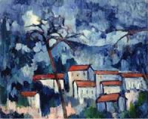
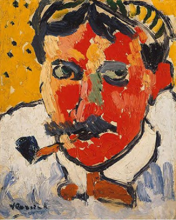
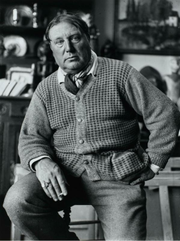
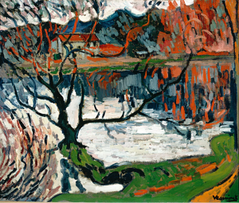
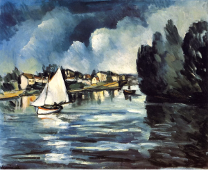

Maurice de Vlaminck
La Seine en Chatou
Óleo (91.8 x 73 cm.)
1908
Portrait of Derain
1905
Maurice de Vlaminck fue uno de esos fieros fauvistas que revolucionaron el arte de principios del siglo XX. Maurice de Vlaminck nació el 4 de abril de 1876 en París. Se dedicó al ciclismo de competición, fue actor y trabajó como violinista.
Nacido en París, hijo de músicos, Vlaminck se traslada con su familia a Le Vésinet en 1879. A los dieciséis años compra su primera bicicleta de carreras, y decide convertirse en ciclista profesional. Con el dinero que gana en las carreras y con sus clases particulares de violín, mantendrá a su joven esposa -con la que se había casado en 1894- durante dos años, hasta que la fiebre tifoidea ponga fin a su carrera deportiva.
Durante esos años empieza a dibujar, pero no será hasta 1900, después de un encuentro fortuito con Derain durante un período de permiso del servicio militar, cuando por fin decida dedicarse seriamente a la pintura. Su amistad con Derain durará toda la vida. Derain realizó dos retratos de Vlaminck, y se sabe con certeza que fue retratado por éste, por lo menos una vez.
La primera aparición pública de Vlaminck como artista se produce en 1905 cuando, junto a Camoin, Marquet, Derain, Manguin y Matisse, su obra se expone en el Salon d'Automne y como consecuencia se une al grupo de artistas conocidos como los fauves. En 1907 le causa una gran impresión la retrospectiva de Cézanne.
Francia, 1876–1958
Chaville, étang d'Ursine
Óleo (54 x 65 cm.)
1905
Landscape with Red Roofs
1907
En 1911 realiza su primer viaje a Londres. Durante la Primera Guerra Mundial reside en Ruán, época en que empieza a escribir poesía. Había publicado con anterioridad dos novelas, una en 1902 y otra en 1903, ambas de temática más o menos explícitamente pornográfica e ilustradas por Derain.
Murió en 1958 tras haber publicado una docena de volúmenes autobiográficos.




